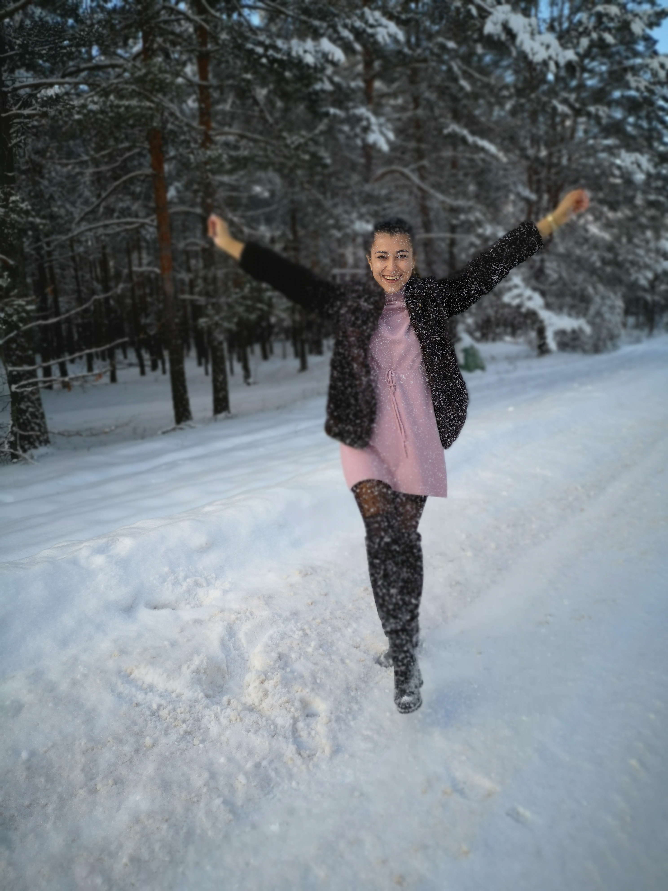
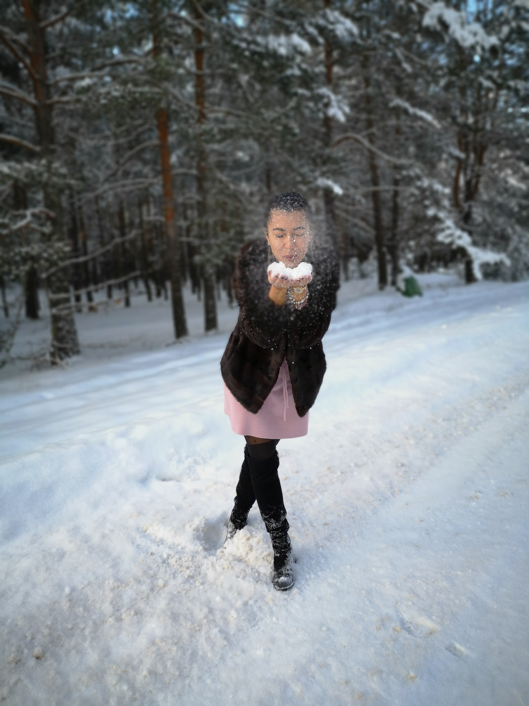
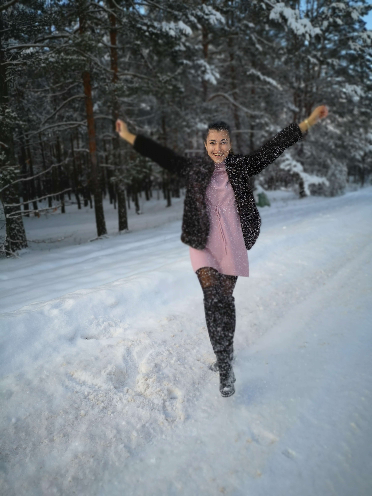
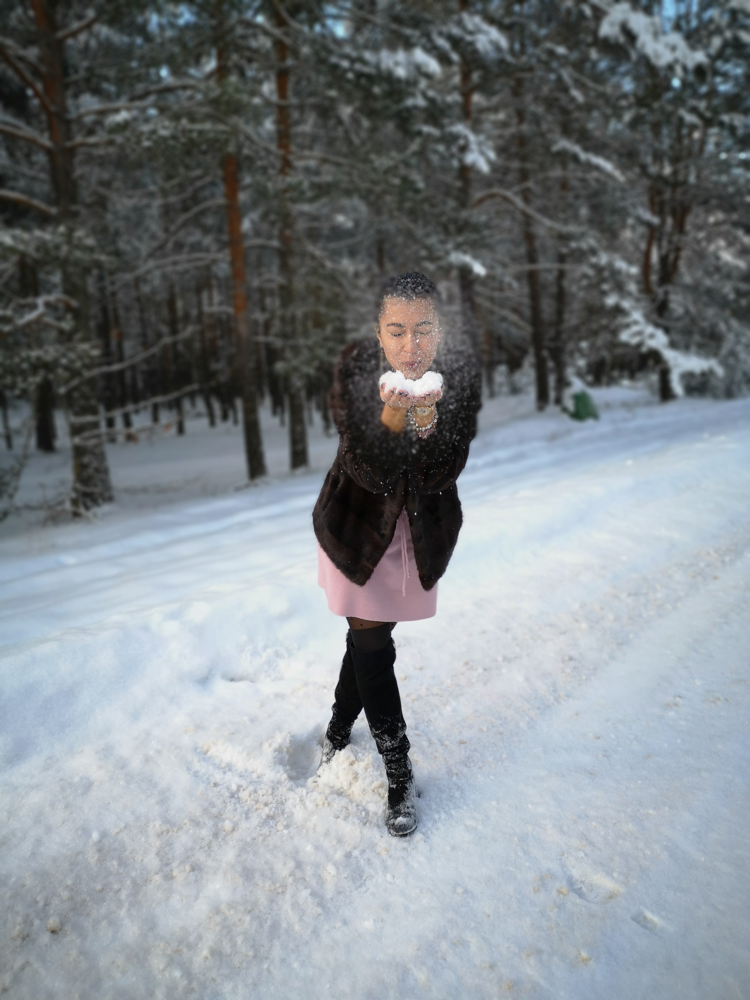

Еще ближе меня можно узнать в моих соц сетях
- как проходит мой день
- о моих путешествиях
- увлечениях
Основную часть своей жизни, я показаваю здесь:
Меня зовут Юля!
Хочу развиваться в IT. Для этого в свободное время прохожу онлайн-курсы и читаю профессиональную литературу. Любовь к деталям и мелочам, а также системный подход помогают мне в этом.
 



Основную часть своей жизни, я показаваю здесь:
Немного расскажу о своих увлечениях, и о том, чем я живу

Я легко увлекаюсь разными вещами - что-то проходит, а что-то остается со мной надолго. Я люблю смотреть и читать, чем увлекаются другие, это вдохновляет и дает возможность узнать о неизведанной до этого области.Сейчас читаю в основном нон-фикшн. Например, книги по маркетингу, психологии, искусству. Люблю также фентези, у меня есть коллекция таких книг, но последнее время мне стало это не так интересно. Даже, скорее, мне просто стало другое интересно больше и это отошло на задний план.
Данный выбор был не спонтанным, так как я давно искала сферу, которая будет отвечать нескольким важным для меня параметрам: